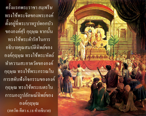

เมื่อโยคีได้ฝึกปฏิบัติโยคะทำให้กิจกรรมจิตใจมีระเบียบวินัย และสถิตในความเป็นทิพย์ ปราศจากความต้องการทางวัตถุทั้งปวง กล่าวได้ว่าเขานั้นได้สถิตอย่างดีในโยคะ



กิจกรรมของโยคีจะแตกต่างจากบุคคลธรรมดาทั่วไป ด้วยลักษณะที่หยุดจากความต้องการทางวัตถุทั้งปวง ซึ่งมีเพศสัมพันธ์เป็นตัวนำ โยคีผู้สมบูรณ์มีระเบียบวินัยอย่างดีในกิจกรรมของจิตใจที่ทำให้ตัวเขาไม่ถูกรบกวนจากความต้องการทางวัตถุใดๆ ทั้งสิ้น ระดับอันสมบูรณ์เช่นนี้บุคคลในกฺฤษฺณจิตสำนึกบรรลุได้โดยปริยาย ดังที่ได้กล่าวไว้ใน ศฺรีมทฺ-ภาควตมฺ (9.4.18-20)
ส ไว มนห์ กฺฤษฺณ-ปทารวินฺทโยรฺ
วจำสิ ไวกุณฺฐ-คุณานุวรฺณเน
กเรา หเรรฺ มนฺทิร-มารฺชนาทิษุ
ศฺรุตึ จการาจฺยุต-สตฺ-กโถทเย
มุกุนฺท-ลิงฺคาลย-ทรฺศเน ทฺฤเศา
ตทฺ-ภฺฤตฺย-คาตฺร-สฺปรฺเศ ’งฺค-สงฺคมมฺ
ฆฺราณํ จ ตตฺ-ปาท-สโรช-เสารเภ
ศฺรีมตฺ-ตุลสฺยา รสนำ ตทฺ-อรฺปิเต
ปาเทา หเรห์ เกฺษตฺร-ปทานุสรฺปเณ
ศิโร หฺฤษีเกศ-ปทาภิวนฺทเน
กามํ จ ทาเสฺย น ตุ กาม-กามฺยยา
ยโถตฺตม-โศฺลก-ชนาศฺรยา รติห์
“พระราชา อมฺพรีษ ทรงใช้พระจิตของพระองค์ตั้งอยู่ที่พระบาทรูปดอกบัวขององค์ศฺรีกฺฤษฺณเป็นลำดับแรก จากนั้นทรงใช้พระดำรัสในการอธิบายคุณสมบัติทิพย์ขององค์กฺฤษฺณ ทรงใช้พระหัตถ์ทำความสะอาดวัดขององค์กฺฤษฺณ ทรงใช้พระกรรณในการสดับฟังกิจกรรมขององค์กฺฤษฺณ ทรงใช้พระเนตรในการมองรูปลักษณ์ทิพย์ขององค์กฺฤษฺณ ทรงใช้พระวรกายในการสัมผัสร่างกายของสาวก ทรงใช้ประสาทสัมผัสในการดมกลิ่นหอมจากดอกบัวที่ถวายให้องค์กฺฤษฺณ ทรงใช้พระชิวหาในการลิ้มรสใบทุละสีที่ถวายแด่พระบาทรูปดอกบัวขององค์กฺฤษฺณ ทรงใช้พระบาทในการเสด็จไปยังสถานที่ศักดิ์สิทธิ์ และวัดขององค์กฺฤษฺณ ทรงใช้พระเศียรในการถวายความเคารพแด่องค์กฺฤษฺณ และทรงใช้พระราชดำริในการปฏิบัติพระภารกิจขององค์กฺฤษฺณ กิจกรรมทิพย์ทั้งหลายเหล่านี้เหมาะสมสำหรับสาวกผู้บริสุทธิ์”
ระดับทิพย์นี้ผู้ปฏิบัติตามวิถีทางที่ไร้รูปลักษณ์ไม่สามารถแสดงออกให้เห็นเป็นรูปธรรมได้ แต่เป็นสิ่งที่ง่าย และปฏิบัติได้สำหรับบุคคลในกฺฤษฺณจิตสำนึกดังที่ได้กล่าวไว้ข้างต้นที่ มหาราช อมฺพรีษ ทรงปฏิบัติ นอกเสียจากว่าจิตเราจะตั้งมั่นอยู่ที่พระบาทรูปดอกบัวขององค์ภควานฺ ด้วยการระลึกถึงพระองค์อยู่เสมอ ไม่เช่นนั้นการปฏิบัติทิพย์เช่นนี้ก็จะเป็นไปไม่ได้ ฉะนั้น ในการอุทิศตนเสียสละรับใช้องค์ภควานฺกิจกรรมที่ได้กล่าวไว้เหล่านี้ เรียกว่า อรฺจน หรือการใช้ประสาทสัมผัสทั้งหมดไปในการรับใช้พระองค์ ประสาทสัมผัส และจิตใจจำเป็นต้องทำงาน การทำเป็นละเลยไม่สนใจไม่ให้มันทำงานเป็นไปไม่ได้ ฉะนั้น สำหรับผู้คนทั่วไปโดยเฉพาะบุคคลที่ไม่อยู่ในระดับสละโลกวัตถุ การใช้ประสาทสัมผัส และจิตใจปฏิบัติรับใช้ทิพย์ดังที่ได้อธิบายแล้วข้างต้น จึงเป็นวิธีที่สมบูรณ์ในการบรรลุถึงวิถีทิพย์ ซึ่งเรียกว่า ยุกฺต ใน ภควัท-คีตา